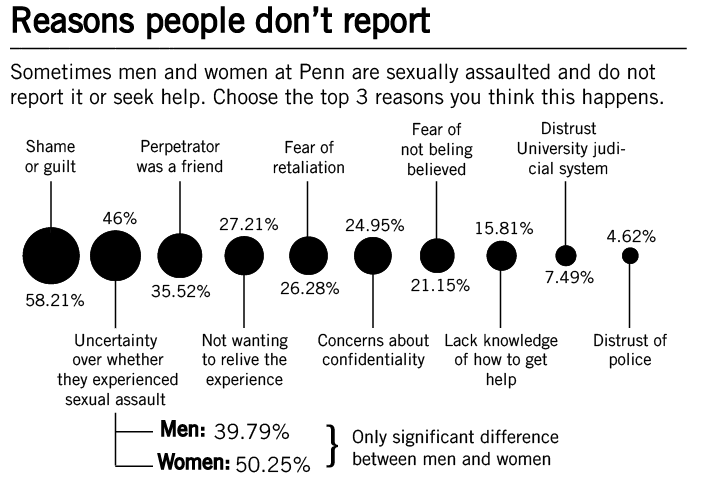
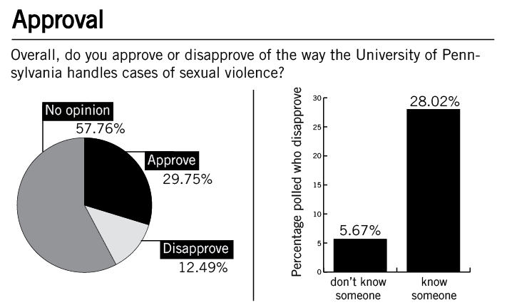

In several high-profile national cases, students have decried the lack of resources for victims of sexual violence at their universities. A Daily Pennsylvanian poll reveals that undergraduate students at Penn are broadly under-informed when it comes to the resources offered by the University, despite the fact that knowing the victim of sexual assault at Penn is a relatively common experience.
While almost a third of undergraduates said they knew someone who had been sexually assaulted at Penn, few were well-informed on the host of resources the University offers to address the issue of sexual violence.
The poll shows that most students don’t have strong feelings on how the University handles cases of sexual assault, but that most say Penn should up the resources it provides to address the issue.
The results of the online, anonymous poll — which was conducted from Sept. 23 to Oct. 2 and has a margin of error of plus or minus 3.4 percentage points — cast light on the state of affairs surrounding sexual violence on Penn’s campus.
Sexual violence: common and underreported
The poll found that 31 percent of undergraduates knew someone — including friends and themselves — “who was sexually assaulted while he or she was a student at the University of Pennsylvania.”
Overall, of people who knew a student who had been a victim of sexual assault, 57 percent knew someone who was assaulted within the last year, and 25 percent said the most recent incident they knew about was reported “to police, Penn administrators or advisors, or other law enforcement or University officials.”
These results mirror academic work focusing on broader society, which have found a high rate of sexual violence in the United States coupled with very low levels of reporting to the police. In a college setting in particular, studies have shown that students are at a higher risk of being raped and sexually assaulted than non-students of the same age group.
However, comparison to another survey of Penn undergraduates, conducted by professor Susan Sorenson of the School of Social Policy and Practice, shows that the DP poll may underestimate the number of people who know a victim. Sorenson — whose survey used more explicit language in describing experiences that qualify as sexual violence — found that two-thirds of students knew someone who had experience sexual violence, and that about half of students knew someone who had committed an act of sexual violence.
Respondents were also asked why students at Penn chose not to report sexual assaults. The most common response was “shame or guilt” — with 58 percent selecting it as one of the top three reasons. The finding gets at the heart of a “victim-blaming” culture that many experts see as contributing to the low levels of reporting and high levels of shame among victims of sexual violence.
Among the other top reasons students said sexual assault goes unreported were “uncertainty over whether what they experienced was sexual assault,” with 46 percent naming that as a top-three reason, and “the perpetrator was a friend,” with 36 percent. Both reasons are reflective of common underlying causes for concern about the factors that complicate dealing with sexual assault on college campuses — a host of issues commonly cloud victims’ judgment over whether an experience qualifies as sexual assault, including the fact that the vast majority of college women who experience rape or attempted rape know their assailant. (While experts acknowledge that men are also sexual assaulted on college campuses, fewer studies have focused on the experience of male victims.)
The greatest demographic predictor of knowing a student who had been assaulted was whether the respondent was in a social fraternity or sorority. Of students not involved in a social fraternity or sorority, 25 percent knew someone who has been sexually assaulted, compared to 50 percent of people in a fraternity or sorority knew someone who had been assaulted.
While the finding does not necessarily imply that there is a higher prevalence of sexual assault among people involved in Greek life — it could be explained by people in fraternities and sororities simply knowing more people — it does dovetail with a broader narrative about college life in the United States.
“They throw the parties in the houses, with the alcohol, with the dim lights, with the mass humanity in a really small space,” said College senior Jeremy Pincus, president of peer sexual violence education group One in Four.
“I don’t think that if you join a fraternity, then you are going to rape someone and/or you’re going to know someone who’s going to be raped,” he said. “I think it’s just by virtue of the culture that collegiate America has around fraternities and sororities and twisted misconceptions about masculinity, what fun in college is, that it just kind of happens that way.”
Students are under-informed
Despite presentations during New Student Orientation and posters throughout campus, students reported low levels of knowledge of the resources that Penn offers to combat sexual violence. For all but one of the six campus resources presented in the poll, a majority of students did not know the resource was available at Penn.
Self-defense classes — which are offered through the Division of Public Safety — were the most well-known resource. The second most highly identified resource, which 39 percent of respondents said was available on campus, was long-term counseling, which is offered through Counseling and Psychological services.
While Special Services — a department of DPS — offers victim advocacy services, students were not very likely to know about that resource, which many experts view as crucial to the well-being of victims of sexual violence. Nineteen percent of students said a “trained rape crisis victim advocate” was available at the University, and 36 percent of respondents said they hadn’t heard of a victim advocate being available in Philadelphia or at Penn. An additional 35 percent said they weren’t sure whether they had heard of the service.
Surprisingly, levels of resource knowledge among people who knew someone who had been assaulted did not differ from overall levels.
Most student — 65 percent — said they “learned about how to get help” after a sexual assault during New Student Orientation. The results indicate that NSO has by far the broadest reach of all of the University’s sexual violence education efforts and reinforces the importance of the messaging that new students get during their first week, a time widely regarded as a time to make friends and go to parties.
Other high-impact education efforts include posters, which 48 percent of students cited as a source of knowledge about where to get help, and resident assistants and graduate advisors, which 30 percent cited.
The poll also revealed students’ preferences for the allocation of resources to decrease sexual violence on campus. When asked to pick two services of a list of eight, a third of students selected “campus centers that provide services for victims of sexual violence,” such as the Penn Women’s Center, the LGBT Center and Counseling and Psychological Services, to get more resources. About an equal proportion of respondents expressed that they would prefer more education on how to help friends who have been sexually assaulted.
Twelve percent of students said the University “gives enough resources.”
Weak opinions on U. handling of sexual violence
In contrast to the headline-grabbing outrage expressed toward administrators at several other schools, most Penn students do not have strong opinions on the University’s handling of sexual assault. Overall, most respondents — 58 percent — said they had “no opinion” on the way Penn handles cases of sexual violence, while 30 percent said they approved, and 12 said they disapproved.
However, people who know someone who was sexually assaulted at Penn are about five times as likely — 28 percent to 6 percent — to say they disapprove as compared to people who do not know someone who was sexually assaulted here. The portion of that group that said they approve was 23 percent, compared to 35 percent for people who didn’t know a victim.
While the differences between the two groups are stark, it is likely that there would be more discontent among people who have personal knowledge of the process, regardless of the quality of the University’s handling of sexual violence.
“I think those people would often be more critical of the process than people who haven’t had to go through the process,” 2007 College graduate Nina Harris, a former violence prevention coordinator at the Penn Women’s Center, said of the findings. “Rightfully so, they may have more issues just generally. The people who haven’t done it don’t know what to have an issue with.”
Approval was also lower among students who have been at the University longer — with students in their third year expressing the highest rate of disapproval at 21 percent overall. While some of the differences can be attributed to older students knowing more people who have been sexually assaulted, several statistical tests suggested that correlation could not account for the entirety of the effect.